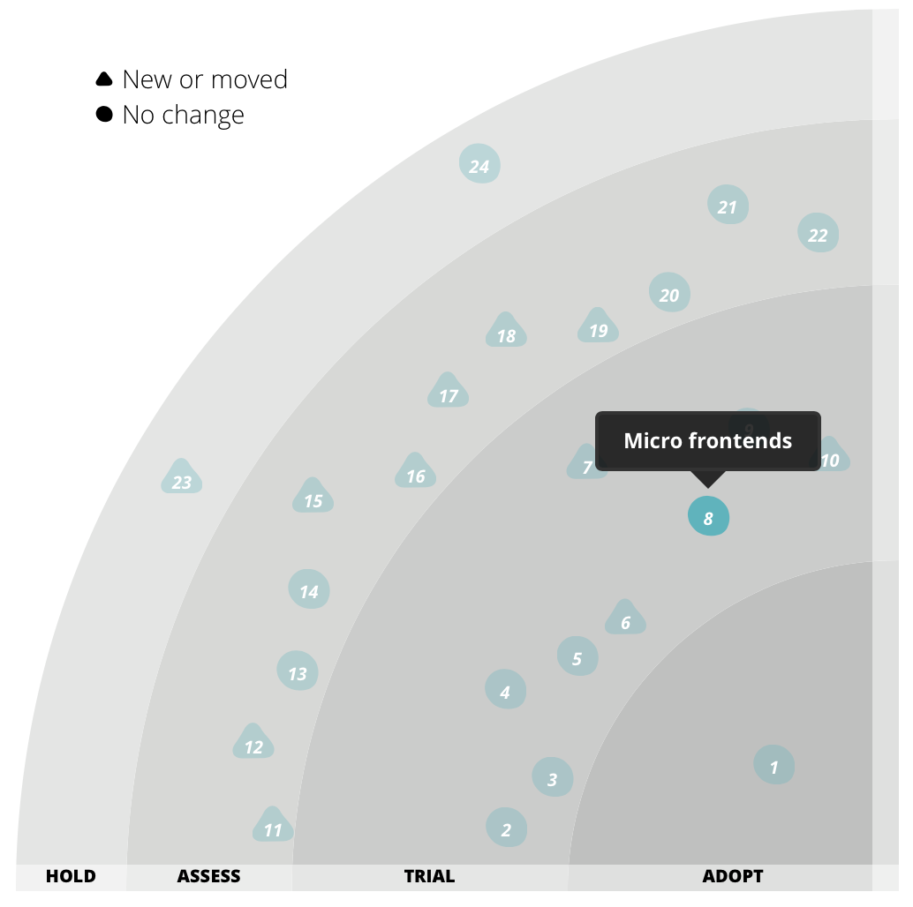
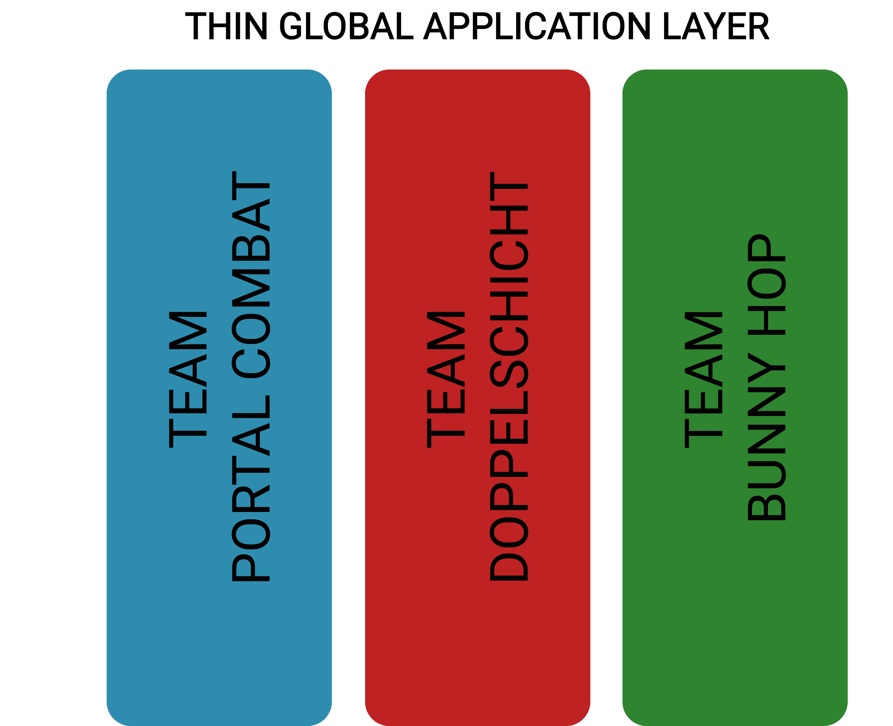

MICRO FRONTENDS
WITH SINGLE PAGE APPLICATIONS
by Elias Dräxler
Slides & Code @ githubOverview
- What are Microfrontends
- Why do we need Microfrontends
- Different types of Microfrontend architecture
- Example
- Things to consider...
Microfrontend
break down frontend monolith into features
multiple different approaches
Server-Side Rendered Microfrontends
developed by ZalandoThoughtworks Technology Radar
Why are Microfrontends usefull
- Framework independent - no Framework lock in
- Each microfrontend has its own state
- Independent deployments
- No shared codebase or conflicts
- Time to market
- Cross-functional teams
Cross-functional teams
You build it, you run it
- Full control over their features
- Choose the best framework for your needs
- Vertical sliced teams

Microfrontend Architecture approaches
Thin global application layer
- single framework
- multiple different frameworks
- Iframe approach
- single-spa framework
- Angular Elements
Single Framework
Multiple Frameworks
- Webcomponent component library
- DOM is the API
- Teams can decide which framework to use


single-spa Example
Things to consider...
- Application size overhead
- caching
- Makes sense for big projects
- complex build & integration
- not the solution for every problem